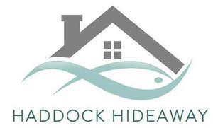

Trade Mark Journal No.2025/018 2 May 2025
UK00004187891 11 April 2025 (43)

- Class 43
- Booking of hotel accommodation; Arranging of hotel accommodation; Arranging hotel accommodation; Hotel accommodation services; Providing hotel accommodation; Guest house services; Reservation of hotel accommodation; Provision of hotel accommodation; Hotel accommodation reservation services; Guest houses; Booking of temporary accommodation; Booking of accommodation for travellers; Booking services for holiday accommodation; Reservation of accommodation in hotels; Appraisal of hotel accommodation; Reservation of tourist accommodation; Booking services for accommodation; Holiday accommodation services; Reservation of temporary accommodation; Rental of holiday accommodation; Hospitality services [accommodation]; Accommodation services; Reservation services for accommodation; Accommodation reservation services; Services for reserving holiday accommodation; Rating holiday accommodation; Temporary accommodation; Temporary accommodation reservation services; Rental of rooms as temporary living accommodations; Arranging of holiday accommodation; Arranging holiday accommodation; Rental of temporary accommodation; Accommodation (Rental of temporary -); Rental of accommodation [temporary]; Accommodation reservations; Rental of vacation accommodation; Providing temporary lodging for guests; Provision of holiday accommodation; Reservation services for the booking of accommodation; Hotels, hostels and boarding houses, holiday and tourist accommodation; Tour operator services for the booking of temporary accommodation; Accommodation reservations (Temporary -); Temporary accommodation reservations; Reservations (Temporary accommodation -); Temporary accommodation services; Providing accommodation in hotels and motels; Arranging of accommodation for tourists; Booking agency services for holiday accommodation; Accommodation bureau services [hotels, boarding houses]; Booking of hotel rooms for travellers; Arranging of temporary accommodation; Tourist agency services for booking accommodation; Hotel room booking services; Reservation of temporary accommodation in the nature of holiday homes; Accommodation bureau services; Travel agency services for booking temporary accommodation; Letting of holiday accommodation; Providing temporary accommodation as part of hospitality packages; Providing temporary accommodation in holiday homes; Agency services for the reservation of temporary accommodation; Arranging of accommodation for holiday makers; Accommodation services for meetings; Provision of temporary furnished accommodation; Providing temporary accommodation; Holiday planning services [accommodation]; Travel agency services for booking accommodation; Providing temporary accommodation in boarding houses; Rental of temporary accommodation in holiday homes and flats; Providing accommodation for meetings; Accommodation bureaux [hotels, boarding houses]; Reception services for temporary accommodation (conferment of keys); Holiday lodgings; Providing room reservation and hotel reservation services; Reception services for temporary accommodation [management of arrivals and departures]; Provision of temporary accommodation; Temporary accommodation information, advice and reservation services; Travel agencies for arranging accommodation; Booking of temporary accommodation via the Internet; Arranging and providing temporary accommodation; Reservation of rooms for travellers; Accommodation services for functions; Providing accommodation for functions; Hotel catering services; Rental of rooms; Guesthouse; Hotel reservation services; Resort lodging services; Arranging temporary housing accommodations; Operating membership accommodation; Providing hotel and motel services; Resort hotel services; Provision of temporary work accommodation; Rental of meeting rooms; Providing travel lodging information services and travel lodging booking agency services for travelers; Rental of conference rooms; Room reservation services; Catering services for hospitality suites; Providing temporary housing accommodations; Room booking; Booking services for hotels; Reservation services for booking meals; Hotel restaurant services; Reservation and booking services for restaurants and meals; Rental of rooms for social functions; Bed and breakfast services; Booking agency services for hotel accommodation; Agency services for booking hotel accommodation; Travel agency services for reserving hotel accommodation; Providing temporary accommodation in holiday flats; Provision of trade show facilities [accommodation]; Providing guesthouse services; Accommodation bureaux services; Room rental for exhibitions; Temporary room hire.
Emma Haddock a partner in the Haddock Hideaway partnership
Jon Haddock a partner in the Haddock Hideaway partnership